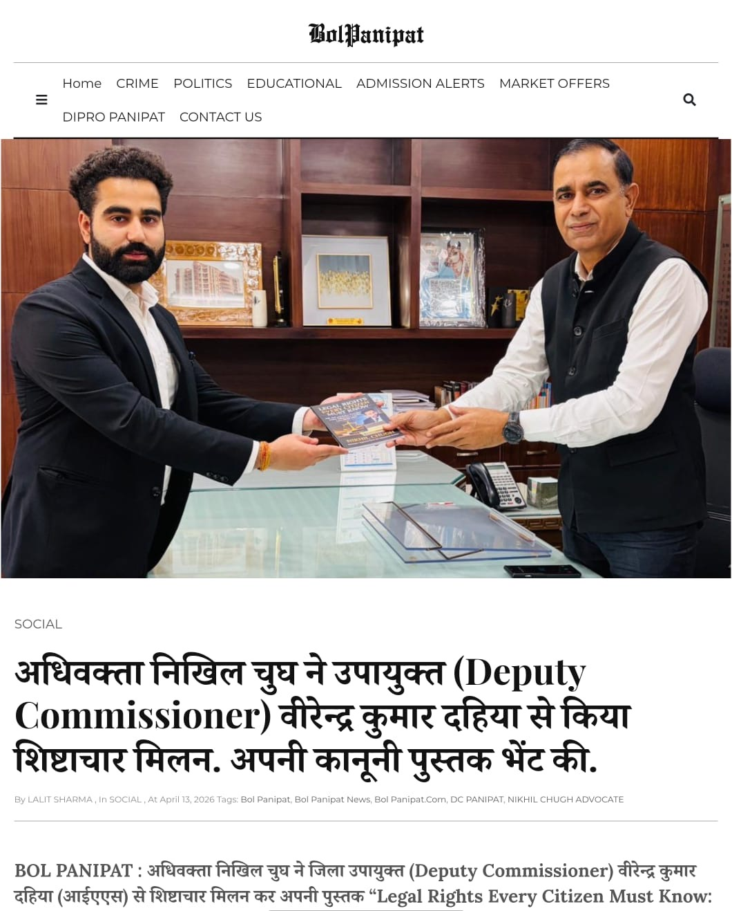
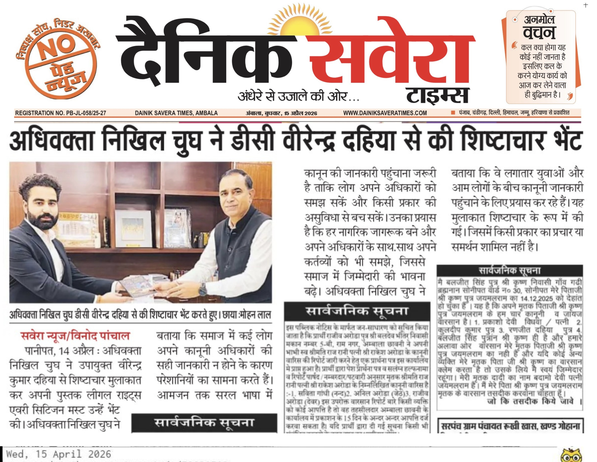

As part of his ongoing legal awareness initiative, Advocate Nikhil Chugh, a Panipat-based legal professional, met Sh. Virendra Kumar Dahiya, Deputy Commissioner, Panipat and presented his book:
“Legal Rights Every Citizen Must Know: FIR, Bail and Police Procedure Under India’s New Criminal Laws (BNSS 2023)”
The initiative focuses on simplifying legal knowledge and making citizens aware of their rights under the newly implemented criminal laws.

This interaction was covered by the local news portal Bol Panipat, highlighting the importance of legal awareness at the administrative level.
Read Full News on Bol Panipat
The initiative also received coverage in Dainik Savera, further strengthening the outreach and impact of spreading legal literacy among citizens.